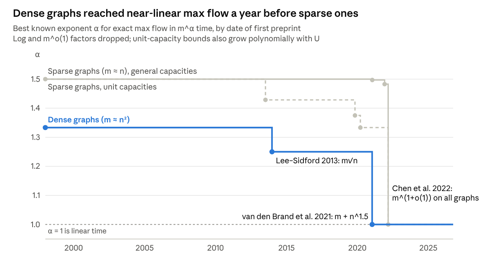

In 2014, Yin Tat Lee and Aaron Sidford built an efficiently computable barrier that lets an interior point method solve a linear program in $\tilde{O}(\sqrt{\operatorname{rank}})$ iterations instead of $\tilde{O}(\sqrt{m})$. Applied to flows, it gave the first $\tilde{O}(m\sqrt{n})$ min-cost flow algorithm. Eight years later max flow fell to $m^{1+o(1)}$, by a different interior point method that grew out of the same program of cheap, approximately maintained steps.
Why $\sqrt{m}$: path following and the barrier parameter#
A path-following interior point method needs about $\sqrt{\nu}$ Newton steps per constant-factor gain in accuracy, where $\nu$ is its barrier’s self-concordance parameter. For the standard logarithmic barrier $\nu$ equals $m$, the number of constraints. That is where the classic $\sqrt{m}$ bound comes from.
Take an LP in inequality form: minimize $c^{\top}x$ subject to $Ax \ge b$, with $A$ an $m \times n$ matrix, so $m$ constraints and $n$ variables. An interior point method follows the central path: for each $t > 0$, the minimizer of a penalized objective, where a barrier $\phi$ blows up at the boundary of the feasible region.
$$x^{\star}(t) = \arg\min_{x}\; t\,c^{\top}x + \phi(x), \qquad \phi_{\log}(x) = -\sum_{i=1}^{m} \ln\!\left(a_i^{\top}x - b_i\right)$$
As $t$ grows, $x^{\star}(t)$ slides toward the optimum. Each iteration raises $t$ a little and takes one Newton step to re-center, which costs one linear system solve.
Nesterov and Nemirovski (1994) isolated what controls the step size. A barrier is $\nu$-self-concordant if its third derivative is bounded by its second (so Newton’s method behaves), and its gradient is bounded in its own Hessian norm:
$$\nabla\phi(x)^{\top}\,\big(\nabla^{2}\phi(x)\big)^{-1}\,\nabla\phi(x) \;\le\; \nu \qquad \text{for all feasible } x$$
With such a barrier, $t$ can grow by a factor of $1 + \Theta(1/\sqrt{\nu})$ per step. Reaching accuracy $\varepsilon$ then takes $O(\sqrt{\nu} \cdot \log(1/\varepsilon))$ iterations. Each log term contributes $1$ to $\nu$, so the log barrier has $\nu = m$, which gives Renegar’s $O(\sqrt{m} \cdot \log(1/\varepsilon))$ method from 1988.
There is a floor. Nesterov and Nemirovski showed that if a vertex of a polytope lies on $k$ linearly independent facets, every barrier for it has $\nu \ge k$. Every vertex of an $n$-dimensional polytope lies on $n$ such facets, so $\nu \ge n$ always, and $\sqrt{n}$ iterations is the limit of this style of analysis.
The gap between $\sqrt{m}$ and $\sqrt{n}$ is the whole story. The log barrier charges for every constraint, even redundant ones: copying a constraint 1,000 times multiplies its weight by 1,000. Carefully duplicated constraints on Klee–Minty cubes force standard interior point methods to take $\Omega(\sqrt{m})$ iterations. For “tall” LPs with $m \gg n$, including the flow LPs below, that is a real loss.
Before 2014: a good parameter or cheap steps, never both#
By 1994 a barrier with $\nu = O(n)$ was known to exist for every convex body, but nobody could evaluate it quickly. The barriers you could compute cheaply all had $\nu$ well above $n$. The table shows the tradeoff Lee and Sidford set out to remove.
| Barrier | Who, when | Parameter $\nu$ | Iterations | Cost of one iteration |
|---|---|---|---|---|
| Logarithmic | Path following: Renegar, 1988 | $m$ | $O(\sqrt{m})$ | One linear system in $A^{\top}S^{-2}A$ |
| Volumetric | Vaidya, 1989 | $O(n\sqrt{m})$ | $O(m^{1/4} \cdot n^{1/2})$ | Leverage scores: the diagonal of a projection matrix |
| Volumetric–log hybrid | Vaidya and Atkinson, 1993; Anstreicher, 1997 | $O(\sqrt{mn})$ | $O((mn)^{1/4})$ | Leverage scores, $O(n^{2}m)$ work |
| Universal | Nesterov and Nemirovski, 1994; tight bound by Lee and Yue, 2018 | $n$ | $O(\sqrt{n})$ | Volume of a polar body; no fast method known |
| Entropic | Bubeck and Eldan, 2014; tight bound by Chewi, 2021 | $n$ | $O(\sqrt{n})$ | Moments of an exponential family on the body; needs sampling |
| Lewis weight | Lee and Sidford, 2013–2019 | $O(n\log^{5} m)$ | $\tilde{O}(\sqrt{n})$ | $\tilde{O}(1)$ linear systems, in the path-finding form |
Iterations are counted per constant-factor gain in accuracy, so each entry hides a $\log(1/\varepsilon)$ factor. Here $m$ is the number of constraints and $n$ the number of variables, assuming $A$ has full column rank; in general $n$ becomes $\operatorname{rank}(A)$.
The volumetric barriers already used the right raw ingredient, leverage scores, which measure how much each constraint matters to the local geometry. Their weakness was that they used leverage scores only once, through a determinant, rather than solving for weights that are self-consistent.
The construction: weight each constraint by its Lewis weight#
The Lee–Sidford barrier is a log-determinant barrier whose constraint weights are the $\ell_p$ Lewis weights of the rescaled constraint matrix. Lewis weights always sum to $n$, not $m$, and that is how the parameter falls from $m$ to $\tilde{O}(n)$.
Leverage scores. For a matrix $M$ with $m$ rows and rank $n$, the leverage score of row $i$ measures how much that row matters to the column space:
$$\sigma_i(M) = m_i^{\top}\big(M^{\top}M\big)^{-1} m_i, \qquad 0 \le \sigma_i(M) \le 1, \qquad \sum_{i=1}^{m} \sigma_i(M) = n$$
Applied to $S_x^{-1}A$, where $S_x$ is the diagonal matrix of slacks $a_i^{\top}x - b_i$, a leverage score says how strongly constraint $i$ shapes the local geometry at $x$. Rows that point the same way share their importance: 1,000 copies of one constraint have total leverage at most $1$. That is exactly the robustness the log barrier lacks.
Lewis weights. D. R. Lewis introduced these weights in 1978 for Banach space geometry, and Cohen and Peng (2014) made them algorithmic for $\ell_p$ row sampling. The $\ell_p$ Lewis weights of $M$ are the unique positive vector $w$ that equals the leverage scores of a reweighted copy of $M$:
$$w = \sigma\!\left(W^{\frac12 - \frac1p} M\right), \qquad W = \operatorname{diag}(w)$$
At $p = 2$ they are plain leverage scores. As $p \to \infty$ they become the weights of the John ellipsoid, the largest-volume ellipsoid inside the polytope. For every $p$ they sum to $n$.
The barrier. In the journal version, Lee and Sidford define, for the polytope $Ax > b$,
$$f_p(x,w) = \ln\det\!\Big(A^{\top} S_x^{-1}\, W^{1-\frac{2}{p}}\, S_x^{-1} A\Big) - \Big(1-\tfrac{2}{p}\Big)\sum_{i=1}^{m} w_i,$$
$$\psi_p(x) = \begin{cases} \max_{w \ge 0}\ \tfrac12 f_p(x,w), & p \ge 2 \\[2pt] \min_{w \ge 0}\ \tfrac12 f_p(x,w), & p \le 2 \end{cases}$$
Setting the derivative in $w_i$ to zero gives exactly the Lewis weight fixed point, so the optimal $w$ is the $\ell_p$ Lewis weights of $S_x^{-1}A$. They call $\psi_p$ the Lewis weight barrier. Their Theorem 3: for $p = \Theta(\log m)$, $\psi_p$ is $O(n\log^{5} m)$-self-concordant, and its gradient and Hessian can be computed to accuracy $\varepsilon$ in $O(mn^{\omega-1} \cdot \log m \cdot \log(m/\varepsilon))$ work.
That result answers an open question from Nesterov and Nemirovski’s 1994 book. It is the first barrier for polytopes that is computable in deterministic polynomial time and nearly matches the universal barrier’s parameter.
Why $p$ near $\log m$. A barrier with parameter $\nu$ has Dikin ellipsoids that approximate the polytope to within a factor depending on $\nu$. So a near-optimal barrier must induce near-optimal inscribed ellipsoids, and John’s ellipsoid is the best one. The $p = \infty$ version, the log-volume of the John ellipsoid centered at $x$, has the right geometry but is not even differentiable: on the interval $[-1, 1]$ it depends on only the nearer endpoint and has a kink at $0$.
Finite $p$ smooths that kink. Taking $p = \Theta(\log m)$ is the compromise: an $\ell_p$ norm with $p$ near $\log m$ is within a constant factor of $\ell_\infty$ on $\mathbb{R}^{m}$, so the ellipsoids stay near-John, yet the weights move slowly enough as $x$ moves for self-concordance to hold. The $\log^{5} m$ in $\nu$ is the price of that smoothing.
From barrier to algorithm: path finding and $\tilde{O}(m\sqrt{n})$ flow#
The algorithm Lee and Sidford actually run is not path following on $\psi_p$. It follows a weighted central path and keeps changing which path it follows, a scheme they call path finding. Each iteration costs $\tilde{O}(1)$ linear system solves, and there are $\tilde{O}(\sqrt{n})$ of them.
The right formulation. Flow problems are naturally LPs with two-sided bounds: minimize $c^{\top}x$ subject to $A^{\top}x = b$ and $l_i \le x_i \le u_i$. For max flow, $x$ is the flow on the $m$ edges, $A$ is the $m \times n$ edge-vertex incidence matrix, and the bounds are capacities. Any barrier for this polytope has $\nu = \Omega(m)$, by the same Nesterov–Nemirovski lower bound. So textbook theory predicts $\sqrt{m}$ iterations here, which is no better than before.
Weighted central paths. Give each coordinate a $1$-self-concordant barrier $\phi_i$ for its interval, and weight it:
$$x_t^{\,w} = \arg\min_{A^{\top}x = b}\; t\,c^{\top}x + \sum_{i=1}^{m} w_i\,\phi_i(x_i)$$
The ideal weights are $\ell_p$ Lewis weights of the locally rescaled matrix, with $p = 1 - 1/\log(4m)$, plus a fixed regularizing amount. They total $O(n)$, so each step can raise $t$ by a factor of about $1 + 1/\sqrt{n}$. Without the regularizer and bounds, this path is dual to the central path of the Lewis weight barrier, which is why the two stories match.
Path finding. Lewis weights cannot be recomputed exactly every step, and approximate weights that jump around would destroy centrality. So the method keeps its own weights $w$ and maintains two invariants: $x$ is near the minimizer for the current $w$, and $w$ is multiplicatively close to the ideal weights at $x$. Each iteration takes a Newton step in $x$, nudges $w$ toward its target, and raises $t$, so it alternates between advancing along a path and switching to a better one.
The norm that beats the lower bound. Centrality is measured in a mixed norm, $\|\cdot\|_\infty$ plus a multiple of the weighted $\ell_2$ norm. Self-concordance is an $\ell_2$ notion, and the $\Omega(m)$ lower bound comes from $\ell_2$ approximating the box $\ell_\infty$ poorly. Tracking $\ell_\infty$ directly lets box constraints, which are trivial in $\ell_\infty$, stop costing $\sqrt{m}$.
Cost per step. Lewis weights for $p < 4$ reduce to a few leverage score computations, which Johnson–Lindenstrauss sketching approximates with $\tilde{O}(1)$ solves of systems $A^{\top}DA$. Keeping $w$ stable under noisy estimates is framed as a two-player game that the paper solves. Theorem 1: an $\varepsilon$-optimal solution in $O(\sqrt{n} \cdot \log^{13} m \cdot \log(mU/\varepsilon))$ linear system solves.
Max flow. For flows, $A^{\top}DA$ is a graph Laplacian, which Spielman–Teng-style solvers handle in $\tilde{O}(m)$ time. That gives min-cost max flow in $O(m\sqrt{n} \cdot \log^{18} m \cdot \log M)$ work and $O(\sqrt{n} \cdot \log^{20} m \cdot \log M)$ depth, where $M$ bounds costs and capacities. Compared with Goldberg and Rao’s $O(m \cdot \min(\sqrt{m}, n^{2/3}) \cdot \log(n^{2}/m) \cdot \log U)$ from 1998, it is never worse up to log factors and strictly better on any graph that is not sparse.
General LPs. A companion paper, Efficient Inverse Maintenance (FOCS 2015), reuses work across iterations because the diagonal $D$ changes slowly. It solves an LP with $d$ variables and $n$ constraints in $\tilde{O}((\operatorname{nnz}(A) + d^{2})\sqrt{d} \cdot \log(1/\varepsilon))$ time. Lazy updates to a slowly changing system became the template for everything in the next section.
Max flow after 2013: fewer steps, cheaper steps, then different steps#
On sparse graphs $m$ and $n$ are about equal, so $\sqrt{n}$ iterations is no better than $\sqrt{m}$. Getting below $m^{1.5}$ there needed other ideas: fewer iterations, cheaper iterations, or a different kind of iteration. The third won, reaching $m^{1+o(1)}$ in 2022.
Fewer iterations (unit capacities)#
Mądry, 2013: $\tilde{O}(m^{10/7})$. This was the first improvement on the $m^{1.5}$ bound for unit-capacity graphs from Even–Tarjan and Karzanov in the 1970s. Each IPM step is an electrical flow; when it overloads a few edges, Mądry perturbs their resistances to boost the energy, which preconditions the central path. An energy-based potential bounds how often this happens, giving $m^{3/7}$ iterations. A 2016 follow-up handled capacities in $\tilde{O}(m^{10/7} \cdot U^{1/7})$.
Liu and Sidford, 2019: $m^{11/8+o(1)} \cdot U^{1/4}$. Picking the best perturbation becomes a smoothed $\ell_2$–$\ell_p$ flow problem, which recent almost-linear solvers handle. That yields a long-step method with a simpler analysis.
Liu and Sidford and Kathuria, 2020: $m^{4/3+o(1)} \cdot U^{1/3}$. Liu and Sidford maximize a Bregman divergence instead of energy; Kathuria uses potential-reduction steps. The two were merged at FOCS 2020. Axiotis, Mądry and Vladu reached $m^{4/3+o(1)} \cdot \log W$ for unit-capacity min-cost flow in the same year.
The catch is the polynomial dependence on $U$. For general capacities on sparse graphs, Goldberg and Rao’s $\tilde{O}(m^{1.5} \cdot \log U)$ still stood.
Cheaper iterations (data structures)#
An IPM step changes most coordinates only slightly, so the expensive work can often be reused. Keep $\sqrt{m}$ iterations, but make each one sublinear on average.
Gao, Liu and Peng, 2021: $\tilde{O}(m^{3/2-1/328} \cdot \log U)$. This was the first improvement on Goldberg–Rao for sparse graphs with polynomial capacities. It dynamically maintains Mądry’s augmenting electrical flows, with data structures that report edges carrying large energy as resistances change.
van den Brand, Gao, Jambulapati, Lee, Liu, Peng and Sidford, 2021: $\tilde{O}(m^{3/2-1/58} \cdot \log U)$. Faster dynamic spectral vertex sparsifiers, plus a differential-privacy trick (the Gaussian mechanism) that lets estimates survive an adaptive adversary.
On dense graphs the same idea, run on the Lee–Sidford barrier, reached nearly linear time in 2020–21; the next section covers that.
Different iterations: the $\ell_1$ interior point method#
Chen, Kyng, Liu, Peng, Probst Gutenberg and Sachdeva (2022) solve max flow and min-cost flow in $m^{1+o(1)}$ time. They drop the central path for a potential-reduction method in the spirit of Karmarkar (1984):
$$\Phi(f) = 20m\,\log\!\big(c^{\top}f - F^{\star}\big) + \sum_{e \in E}\Big( (u^{+}_e - f_e)^{-\alpha} + (f_e - u^{-}_e)^{-\alpha} \Big), \qquad \alpha = \frac{1}{1000\,\log(mU)}$$
Each step finds a circulation $\Delta$ that approximately minimizes $g^{\top}\Delta / \|L\Delta\|_1$, where $g$ is the gradient of $\Phi$ and $L$ is a diagonal matrix of edge lengths. This undirected minimum-ratio cycle problem only needs an $m^{o(1)}$ approximation. Each step cuts $\Phi$ by $m^{-o(1)}$, so $m^{1+o(1)}$ steps suffice.
The switch from $\ell_2$ to $\ell_1$ is the key move. An $\ell_2$ step is an electrical flow that touches every edge, while an $\ell_1$ step can be taken to be a single cycle, which is a sparse update. That trades $\sqrt{m}$ dense steps for about $m$ sparse ones, and sparse steps are what dynamic graph data structures are good at.
Good cycles come from low-stretch spanning trees: some fundamental cycle of the tree is within the tree’s stretch of the best ratio. The data structure keeps a recursive chain of smaller instances: $j$-tree-style vertex reduction into “core graphs” alternates with spanners for edge reduction, levels are rebuilt lazily, and the IPM’s own stability tames the adaptive adversary. Every cycle is found and applied in amortized $m^{o(1)}$ time.
After 2022#
Deterministic: van den Brand et al. (2023) made the $m^{1+o(1)}$ bound deterministic. A FOCS 2024 paper extended it to decremental graphs and improved the static bounds.
Combinatorial: Bernstein, Blikstad, Saranurak and Tu (2024) got $n^{2+o(1)} \cdot \log U$ with augmenting paths and push-relabel guided by a directed expander hierarchy. A 2025 follow-up with Jason Li simplified this to $\tilde{O}(n^{2} \cdot \log U)$, shipped a C++ implementation, and gave a deterministic $\tilde{O}(n^{2})$ bound for bipartite matching.
Augmenting paths on sparser graphs: Li (April 2026) gave an $mn^{1/2+o(1)}$ augmenting-path algorithm for unit-capacity directed graphs, the first such improvement over Dinic on moderately sparse graphs. It uses the 2024 IPM data structure as a black box.
Strongly polynomial: Orlin’s $O(mn)$ from 2013 is still the general bound. Dadush, Orlin, Sidford and Végh (SODA 2026) beat it on structured inputs, including $n^{\omega+o(1)}$ for bipartite $b$-matching.
The exponent over time#
The Lee–Sidford line shows up only on dense graphs. With $m \approx n^{2}$, $m\sqrt{n}$ is $m^{1.25}$ and $m + n^{1.5}$ is linear; with $m \approx n$, $\sqrt{n}$ equals $\sqrt{m}$, so the same papers leave the sparse lines flat.

Where the barrier went next#
The barrier’s biggest payoff came from pairing $\sqrt{\operatorname{rank}}$ iterations with data structures that make each iteration nearly free. That combination gave nearly linear time for tall dense LPs and for flows on graphs with $m \ge n^{1.5}$, a year before the general almost-linear result.
Tall dense LPs. van den Brand, Lee, Sidford and Song (2020) solve an LP with $d$ variables and $n \ge d$ constraints in $\tilde{O}(nd + d^{3})$ time. They use a robust primal-dual $\tilde{O}(\sqrt{d})$-iteration method modeled on Lee–Sidford, implemented with heavy hitters, Johnson–Lindenstrauss sketches and inverse maintenance. Without fast matrix multiplication, that is essentially optimal for dense inputs.
Bipartite matching. van den Brand, Lee, Nanongkai, Peng, Saranurak, Sidford, Song and Wang (2020) give $\tilde{O}(m + n^{1.5})$ for maximum bipartite matching, which is nearly linear once $m \ge n^{1.5}$. A log-barrier version gets only $\tilde{O}(n\sqrt{m})$; the Lee–Sidford barrier is what removes the extra factor. The key data structure finds high-energy edges of electrical flows on expanders.
Min-cost flow, $\ell_1$ regression and MDPs. van den Brand, Lee, Liu, Saranurak, Sidford, Song and Wang (2021) extend this to min-cost flow with capacities in $\tilde{O}(m + n^{1.5})$, $\ell_1$ regression in $\tilde{O}(mn + n^{2.5})$, and discounted MDPs in $\tilde{O}(S^{2}A + S^{2.5})$. Their data structures maintain approximate Lewis-weight variants, which generalize leverage scores and effective resistances. On graphs with $m \ge n^{1.5}$ these bounds carry only polylog overhead, against the $m^{o(1)}$ factor of the general almost-linear algorithms.
Computing the weights. Fazel, Lee, Padmanabhan and Sidford (2021) compute $\ell_p$ Lewis weights for $p > 2$ to high precision in $\tilde{O}_p(\log(1/\varepsilon))$ leverage-score rounds, which makes the near-optimal barrier computable in polylog depth. In 2026 this got sharper: Gribling, Sidford and Zhang (COLT) use $O(p^{2}\log(m/\varepsilon))$ rounds for $p \ge 4$, and Padmanabhan (September) shows the plain fixed-point iteration works for every $p > 2$, contracting KL divergence by $1 - 2/p$ per step.
Sampling. Laddha, Lee and Vempala (2020) show the barrier is strongly self-concordant, giving the first Dikin walk that mixes in $\tilde{O}(n^{2})$ steps on any polytope in $\mathbb{R}^{n}$. Gatmiry, Kelner and Vempala (2024) mix a Lewis-weight and log barrier for Riemannian Hamiltonian Monte Carlo, improving mixing from $\tilde{O}(mn^{2/3})$ to $\tilde{O}(m^{1/3} \cdot n^{4/3})$.
Open problems#
Twelve years on, the barrier question is settled only up to logarithms. Strong polynomiality, simplicity and true linear time remain open.
- Shaving the logs. The Lewis weight barrier has $\nu = O(n\log^{5} m)$, and the LP algorithm carries a $\log^{13} m$ factor. The universal and entropic barriers achieve exactly $n$ but are expensive to evaluate. Is there a barrier with $\nu = O(n)$ whose steps cost $\tilde{O}(1)$ linear solves?
- Fewer than $\sqrt{n}$ iterations. Self-concordance theory stops at $\sqrt{n}$, but structure can beat it. Unit-capacity flow methods use about $m^{1/3}$ iterations, and Vladu (STOC 2025) gets $\tilde{O}(n^{1/3})$ for problems on M-matrices. Can general LPs be solved in $o(\sqrt{n})$ cheap iterations?
- Strongly polynomial LP. Allamigeon, Gaubert and Vandame (2022) show that no self-concordant barrier method is strongly polynomial; they give an LP in dimension $n$ with $2n$ constraints forcing $\Omega(2^{n})$ iterations. That covers the Lewis weight barrier too, so a strongly polynomial LP algorithm needs a different idea.
- Max flow in $\tilde{O}(m)$, simply. The $m^{o(1)}$ factor comes from the recursive data structure. Removing it, or matching it with an algorithm simple enough to implement, is open. Combinatorial methods are near-linear only on dense graphs so far.
- LP in input-sparsity time. Square LPs are solvable in about matrix multiplication time, $n^{\omega}$ (Cohen, Lee and Song, 2019, and successors). Tall dense LPs run in $\tilde{O}(nd + d^{3})$. How close general LPs can get to the time it takes to read them is unknown.
Sources#
All links checked on October 2, 2026. Years are first arXiv versions.
Barriers and linear programming#
- Lee and Sidford, Solving Linear Programs with Sqrt(rank) Linear System Solves (2019; journal version of the two papers below)
- Lee and Sidford, Path Finding I: Solving Linear Programs with Õ(sqrt(rank)) Linear System Solves (2013)
- Lee and Sidford, Path Finding II: An Õ(m sqrt(n)) Algorithm for the Minimum Cost Flow Problem (2013)
- Lee and Sidford, Efficient Inverse Maintenance and Faster Algorithms for Linear Programming (2015)
- Anstreicher, Volumetric path following algorithms for linear programming (Math. Programming, 1997)
- Lee and Yue, Universal Barrier is n-Self-Concordant (2018)
- Bubeck and Eldan, The entropic barrier: a simple and optimal universal self-concordant barrier (2014)
- Chewi, The entropic barrier is n-self-concordant (2021)
- Cohen and Peng, ℓp Row Sampling by Lewis Weights (2014)
- Cohen, Lee and Song, Solving Linear Programs in the Current Matrix Multiplication Time (2018)
- van den Brand, Lee, Sidford and Song, Solving Tall Dense Linear Programs in Nearly Linear Time (2020)
- Allamigeon, Gaubert and Vandame, No self-concordant barrier interior point method is strongly polynomial (2022)
- Vladu, Breaking the Barrier of Self-Concordant Barriers: Faster Interior Point Methods for M-Matrices (2025)
Maximum flow#
- Mądry, Navigating Central Path with Electrical Flows: from Flows to Matchings, and Back (2013)
- Liu and Sidford, Faster Energy Maximization for Faster Maximum Flow (2019)
- Liu and Sidford, Faster Divergence Maximization for Faster Maximum Flow (2020)
- Kathuria, A Potential Reduction Inspired Algorithm for Exact Max Flow in Almost Õ(m^4/3) Time (2020)
- Axiotis, Mądry and Vladu, Circulation Control for Faster Minimum Cost Flow in Unit-Capacity Graphs (2020)
- van den Brand et al., Bipartite Matching in Nearly-linear Time on Moderately Dense Graphs (2020)
- van den Brand et al., Minimum Cost Flows, MDPs, and ℓ1-Regression in Nearly Linear Time for Dense Instances (2021)
- Gao, Liu and Peng, Fully Dynamic Electrical Flows: Sparse Maxflow Faster Than Goldberg-Rao (2021)
- van den Brand et al., Faster Maxflow via Improved Dynamic Spectral Vertex Sparsifiers (2021)
- Chen, Kyng, Liu, Peng, Probst Gutenberg and Sachdeva, Maximum Flow and Minimum-Cost Flow in Almost-Linear Time (2022)
- van den Brand et al., A Deterministic Almost-Linear Time Algorithm for Minimum-Cost Flow (2023)
- van den Brand et al., Almost-Linear Time Algorithms for Decremental Graphs: Min-Cost Flow and More via Duality (2024)
- Bernstein, Blikstad, Saranurak and Tu, Maximum Flow by Augmenting Paths in n^(2+o(1)) Time (2024)
- Bernstein, Blikstad, Li, Saranurak and Tu, Combinatorial Maximum Flow via Weighted Push-Relabel on Shortcut Graphs (2025)
- Dadush, Orlin, Sidford and Végh, From Incremental Transitive Cover to Strongly Polynomial Maximum Flow (2025)
- Li, Balancing Weights, Directed Sparsification, and Augmenting Paths (2026)
Lewis weights and sampling#
- Fazel, Lee, Padmanabhan and Sidford, Computing Lewis Weights to High Precision (2021)
- Gribling, Sidford and Zhang, Computing Lewis weights to high precision using local relative smoothness (2026)
- Padmanabhan, Computing Lewis Weights to High Precision by Fixed-Point Iteration (2026)
- Laddha, Lee and Vempala, Strong Self-Concordance and Sampling (2019)
- Gatmiry, Kelner and Vempala, Sampling Polytopes with Riemannian HMC: Faster Mixing via the Lewis Weights Barrier (COLT 2024)